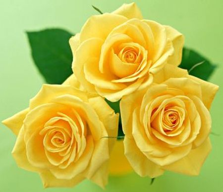
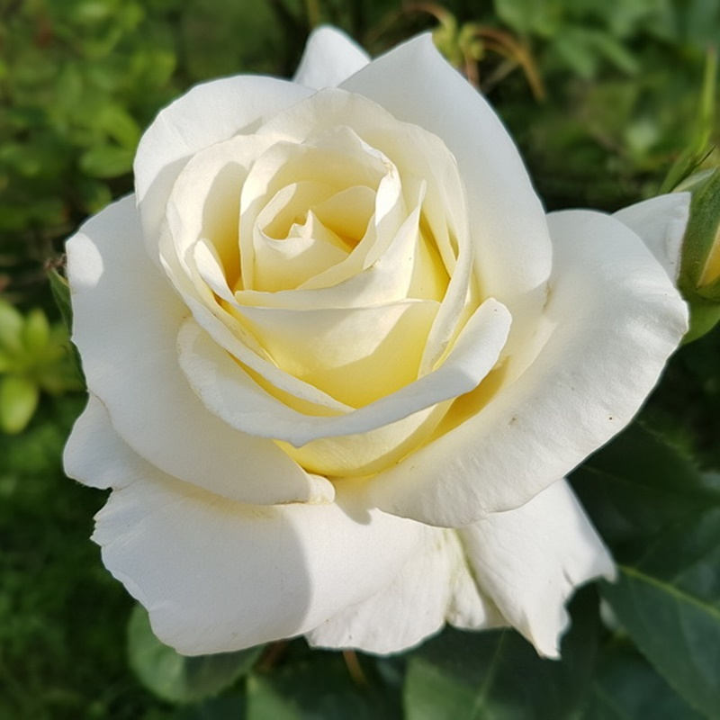
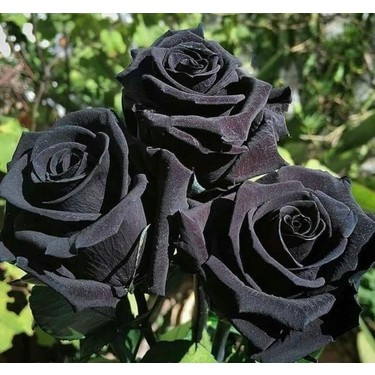
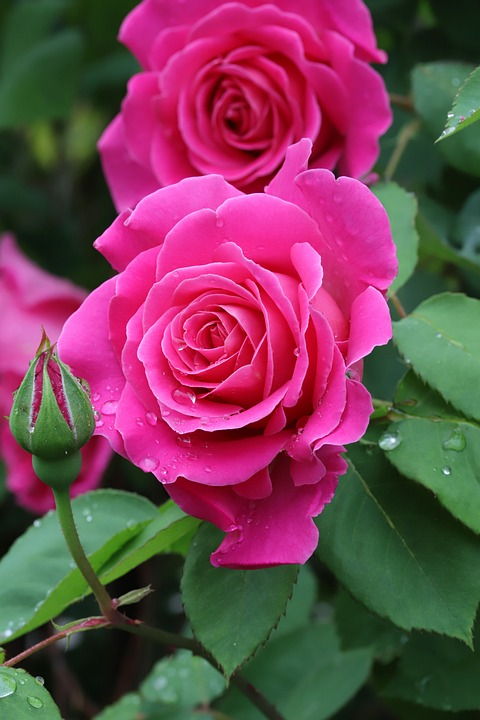
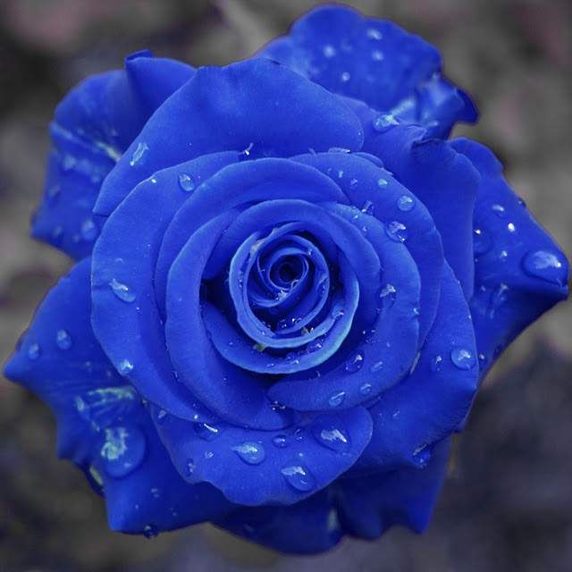
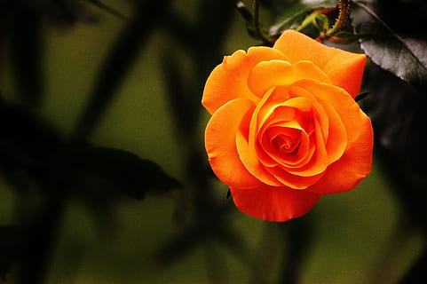

ÇİÇEK ÇEŞİTLERİ
Anasayfa
Güller
Papatyalar
Orkideler
Saksı Çiçekleri
Diğer Çiçekler
GÜLLER
KIRMIZI GÜL
Kırmızı gül “Seni Seviyorum” demenin en popüler yolu olmaya devam ediyor. Kırmızı gülün zengin mirası günümüzde aşıkların çiçeği olarak doruğa çıkmış durumda. Romantik duygular, gerçek aşkın temsili, dikenlerden de güçlü bir birliktelik bu sayede ifade ediliyor.
SARI GÜL
Bir dosta verilen sarı gül dostluğunuzun gücünü ve bağlılığınızı ifade ediyorken sevgilinize vereceğiniz sarı gül biraz kıskançlık biraz ayrılık duygularını barındırıyor. Ortadoğu'da 18 yüzyılda keşfedilen sarı gül Alman geleneklerinde ise ihaneti ve biten aşkı simgeliyor.

BEYAZ GÜL
Diğerlerine nazaran daha eski bir gül türü olup beyaz gülün anlamı yoğunlukla duruluk ve masumiyettir. Sağlık ve evlilik gibi kutsiyet atfedilen seremoniler için vazgeçilmezlerdendir. DURULUK , MASUMİYET , SAYGI , SIR , DEĞER. Sarı Gülün Anlamı verdiğiniz kişiye göre değişiyor.

SİYAH GÜL
Siyah gül anlamı, kara sevdadır. Bu çiçek, aşıkların birbirine olan sonsuz aşkının mührü olarak görülür. Siyah gül, aynı zamanda umudun da simgesidir. Bu sıradışı çiçek, yeni başlangıçları sembolize eder.

PEMBE GÜL
Pembe Gül, renginin verdiği sevimlilikle beraber nezaket ve şirinliği temsil eder. Pembe gülün anlamı gereği masumiyet, zarafet ve cilvesiyle sizi etkileyen birine verirseniz tam anlamıyla yerine ulaşmış olur.

MAVİ GÜL
Halen doğal olarak bulunamaması onun maneviyatı simgelediğine dair olan inancı artırmıştır. Aslında ya mor olarak ya da lavantanın türevi olarak bulunmaktadır. Mavi gülün anlamı genel olarak maneviyatı ifade etmekle beraber elde edilemez hayallere işaret eder.

TURUNCU GÜL
Turuncu güller arzu, heves ve gururu temsil ederken, verildiği kişiye büyülenmeyi ifade eder. Aynı zamanda çiçek bahçelerine de oldukça yakışacaktır.
